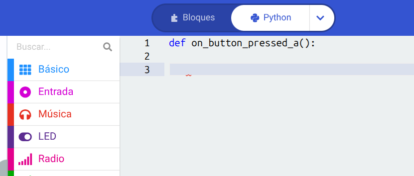
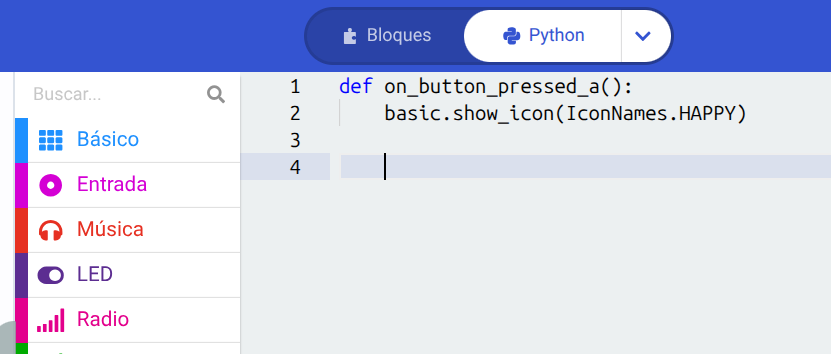
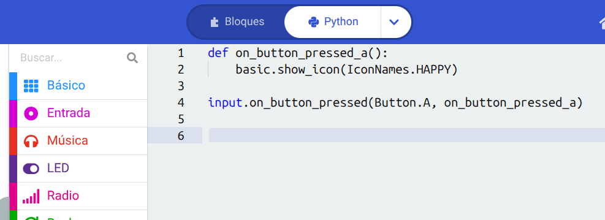
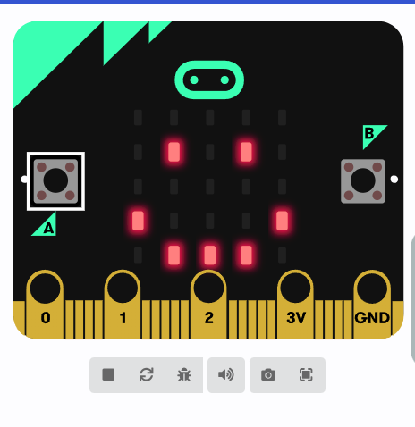

Text
⚡ ¿Qué son los eventos y cómo usarlos en Python?
¡Buenas! Ya sabés usar variables, imprimir texto y armar tus propios combos con funciones. Hoy llegamos al último nivel: los eventos.
Un evento es, básicamente, un aviso de que algo acaba de pasar. Pensalo como cuando te suena la alarma del celular para despertarte o cuando alguien toca el timbre de tu casa: tu vida viene normal en "pausa" o haciendo otra cosa, hasta que pasa ese evento y te obliga a reaccionar. En la micro:bit, un evento puede ser que aprietes un botón, que sacudas la placa o que cambie la temperatura. ¡Vamos a programar uno!
Pasos a seguir
1. Crear el detector de eventos (El botón A)
En Python, para que la placa se quede escuchando si pasa algo, usamos funciones especiales. Vamos a armar una que reaccione cuando alguien presione el botón A de la micro:bit. Escribí en tu primer renglón:
def on_button_pressed_a():

2. Programar la reacción (¿Qué pasa si lo aprieto?)
Igual que con las funciones normales, lo que vaya a pasar cuando se active el evento tiene que llevar indentación (sangría) a la izquierda. Vamos a hacer que cuando alguien toque el botón A, aparezca una cara feliz en la pantalla. Escribí abajo:
def on_button_pressed_a(): basic.show_icon(IconNames.HAPPY)

3. Activar la oreja de la micro:bit
Para que la placa realmente asocie esa función con el botón físico, tenemos que pasarle el comando que "conecta" el evento. En un renglón nuevo (sin sangría, abajo del todo), escribí esta línea para activar el sensor:
input.on_button_pressed(Button.A, on_button_pressed_a)

4. ¿Qué pasa mientras nadie toca nada?
Lo genial de los eventos es que no bloquean la placa. Vos podés tener un bucle ejecutando otra cosa todo el tiempo (como pasar un texto infinito), y en el segundo exacto en el que dobles o aprietes el botón, el evento va a "interrumpir" lo que estaba haciendo la placa, va a mostrar la cara feliz, y después va a seguir con lo suyo.
5. ¡A probarlo en el simulador!
Mirá el simulador a la izquierda. Al principio la placa no va a hacer nada. Pero si movés el cursor del mouse y le hacés un clic arriba del botón A de la placa virtual... ¡pum! Va a aparecer el icono de la cara feliz en los LEDs. ¡Acabas de dominar los sensores y los eventos!

💡 Tip definitivo: Los eventos son el alma de la robótica. Podés usar input.on_gesture(Gesture.SHAKE, ...) para que pase algo cuando alguien sacuda la micro:bit (ideal para hacer un dado electrónico), o reaccionar cuando cambia la luz del lugar. ¡El límite es tu imaginación!